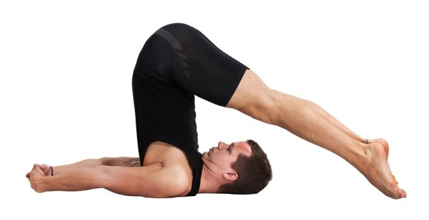

हलासना(Halasana)
Rise up to Wise up
हलासना(Halasana)-The Plough Pose
Halasana or plough pose can be practiced after one masters the poorva halasana or the preliminary plough pose. Halasana can remove fat from the waist and improve the health of the abdominal organs especially the kidneys, pancreas and the intestines. It can also improve the functioning of the thyroid. In Sanskrit ‘Hal’ means a ‘plough’ and ‘Asana’ means ‘pose’. In Halasana, the body resembles the plough in the final pose.
IMPORTANT NOTE:
Halasana should be done with care and should be avoided by those suffering from sciatica, slipped disk, spondylitis, high blood pressure.How to do Halasana (Low Lunge Pose)?
Start in supine position, lying on your back. Relax fully and breathe normally. Keep the legs together and the hands should be kept close to the body. Hold your breath and slowly raise the legs to vertical position. Use only the muscles of the waist and stomach to do this. Do not use the arms to lift the legs. Move the legs further back as much as possible. At this stage one can use the hands to support the lower back and to further push the waist and trunk, until the legs touch the floor. Move the legs as further from the head as possible. At this stage one achieves a chin lock. Pressure is put on the thyroid glands. Maintain this position for few seconds to few minutes depending on your level of comfort. Come back to the normal supine position. Relax all the muscles and breathe normally. After this asana, once can do any backward bending asana (like ushtrasana, supta vajrasana, chakrasana, etc.) as a counter pose.Benefits of Halasana (Low Lunge Pose)
1)It helps to reduce fat around the waist.2)It stretches the abdominal organs especially the intestines, the kidneys and the pancreas and improves the health of those organs.
3)This is good for diabetic patients.
4)The chin lock puts pressure on the thyroid glands and helps to balance metabolic rate.
5)Halasana can improve digestion, relieve piles and constipation.